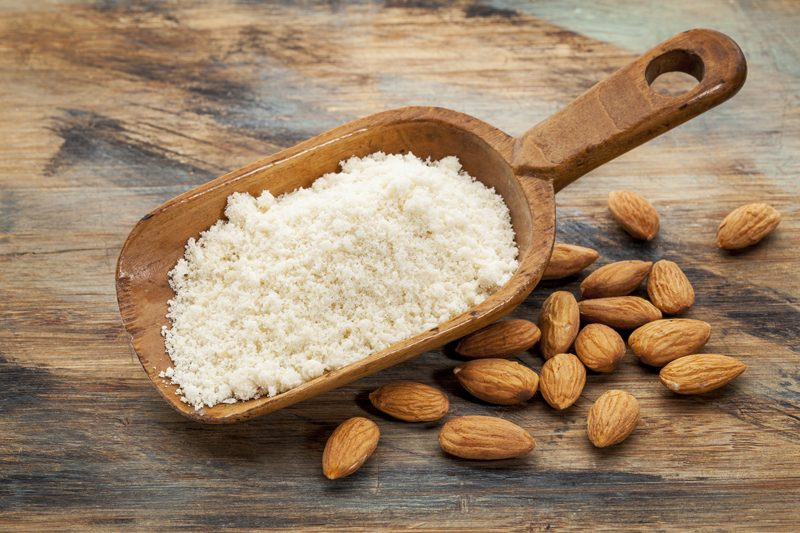

Almond Flour – made from whole almonds
Almond Flour
This type of almond flour is made from raw whole almonds. Looking for a flour that is light, fluffy in texture? Then this isn’t your flour. :) Since it is made from the whole nut, it will contain more natural, healthy fats than other almond flours. If you wish to create a white almond flour (minus the brown specs from the skins), you will want to remove the skins from the almonds after soaking and before dehydrating the almonds.

Due to these fats, you need to be careful that you don’t over-process it while grinding it into a flour. Over-processing will cause the almonds to start to release the natural fats, and you will be well on your way to making almond butter. Nothing wrong with this, but it might not be what you need at the moment. Should this start to happen, don’t toss it out… go ahead and make almond butter. Click (here) to learn how.
When using this form of flour in recipes, it will have more a nutty texture and taste. So, before starting your recipe, stop and think about what texture you’re after. Using truffles as an example… are you making a truffle made with a combination of other nuts and seeds? If so, using this almond flour would be just fine, and small bits of almonds won’t affect the end texture. But perhaps you want to make a melt-in-the-mouth truffle? Using a fine ground almond flour would be better.
Best Made as Needed
I do recommend making this type of flour as needed. It is quick and easy, so it won’t take much time to do it on the spot, as long as you already have sprouted and dehydrated the almonds (an excellent habit to get into). This way, you won’t lose any possible nutrients. If you do make extra, store it in an airtight container and store in the fridge or freezer to keep it fresh.
 Ingredients:
Ingredients:
Yields 1 cup flour
Preparation:
- Start by soaking and dehydrating the almonds before using them to make almond flour.
- Make sure that there isn’t any moisture in the almonds.
- To make a white flour without the brown flex as seen in the photo, remove the almond skins after soaking and before dehydrating.
- Place the almonds in either a; the dry container that comes with the Vitamix, a high-speed blender or food processor.
- To get the finest grind, use the Vitamix dry container.
- Process until the almonds break down to a flour texture.
- The end texture will depend on the equipment that is used to grind the almonds down.
- Make as needed.
© AmieSue.com